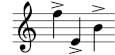
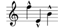
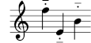
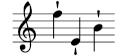
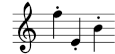

A.14 Liste des signes d’articulation
Les listes qui suivent recensent les symboles prédéfinis dans le
glyphe Feta que vous pouvez attacher à une note (par ex. f\accent
ou f->). Chaque exemple illustre les trois positionnements : en
surplomb (up), en dessous (down) et à l’appréciation de
LilyPond (neutral).
Scripts d’articulation
\accent ou ->

| \espressivo
![[image of music]](../0f/lily-a10f635d.png)
| \marcato ou -^

| \portato ou -_

|
\staccatissimo
ou -!

| \staccato ou -.

| \tenuto ou --
|
Scripts d’ornement
Scripts de point d’orgue et point d’arrêt
Scripts spécifiques à certains instruments
Scripts de reprise et de répétition
Scripts pour musique ancienne
Autres langues : English, català, deutsch, español, italiano, 日本語.
About automatic language selection.